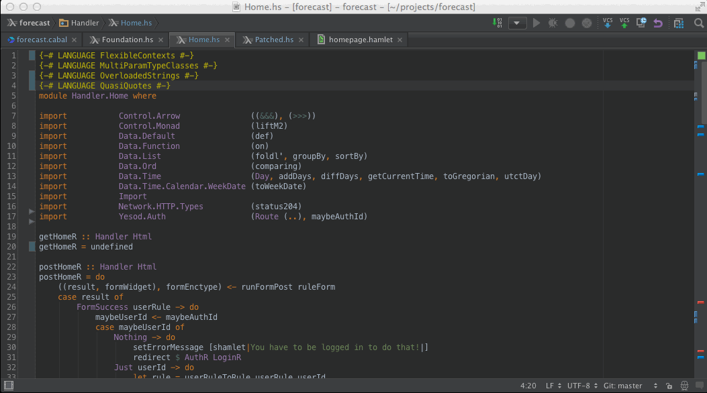
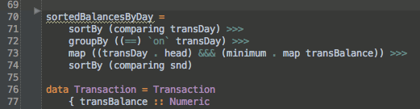
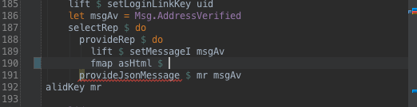
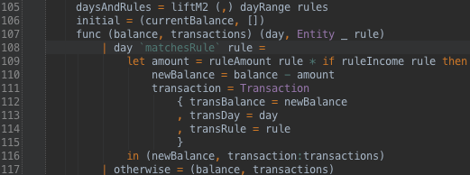
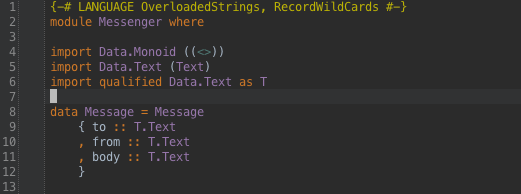
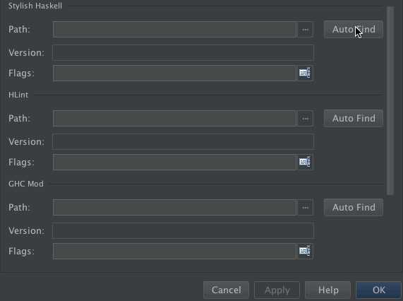
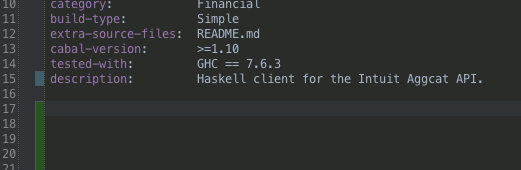
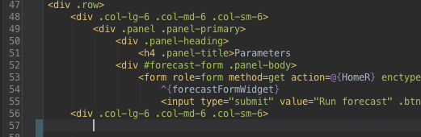

Intelligent, context-aware autocompletion

Automatically add type signatures |
HLint integration |
Jump to function declaration |
Prettify with Stylish Haskell |
Simple tool configuration |
Cabal syntax |
Hamlet syntax |